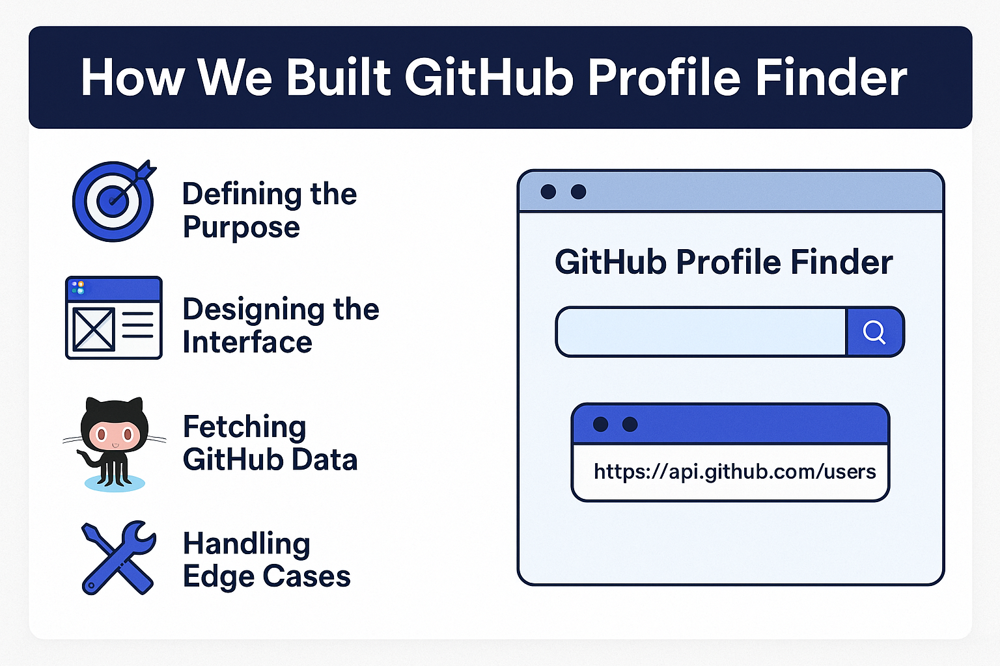

The GitHub Profile Finder is a modern, responsive tool that helps you view public data about any GitHub user in seconds. Built using HTML, CSS, and JavaScript (or React for scalability), this app consumes GitHub’s public REST API and turns raw data into a clean, readable card.
We wanted to create a lightweight tool that could:
We used Figma for wireframing and kept the layout minimal for both desktop and mobile devices. The card shows data in a clear hierarchy.
We fetch data using:
https://api.github.com/users/{username}
It returns JSON data which we parse and render into the UI.
We hosted it on Vercel for fast deployment. It works great on all screen sizes and delivers results in milliseconds!
GitHub Profile Finder is a perfect beginner-intermediate project to practice working with APIs, DOM manipulation, and responsive web design.